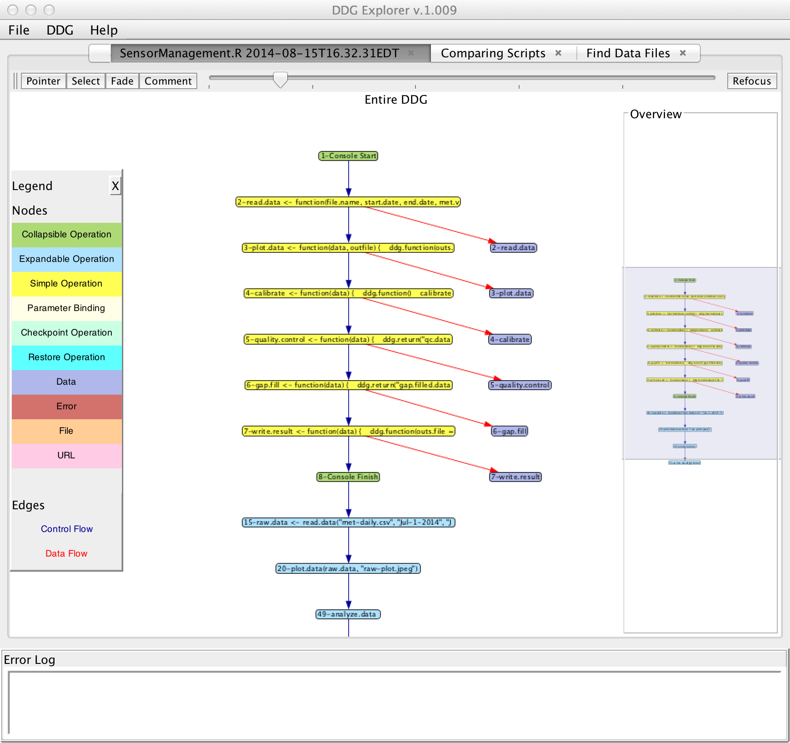
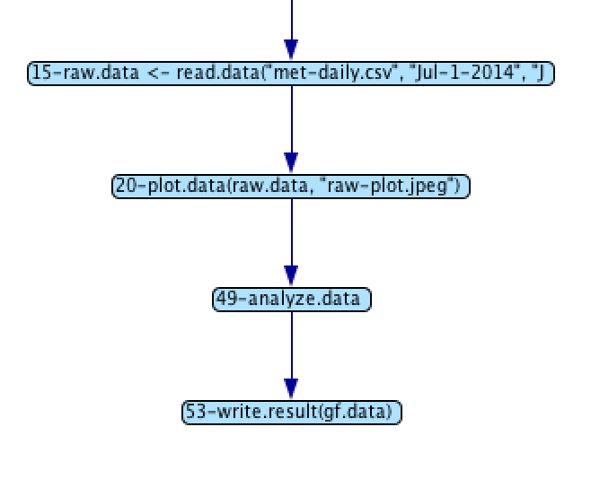
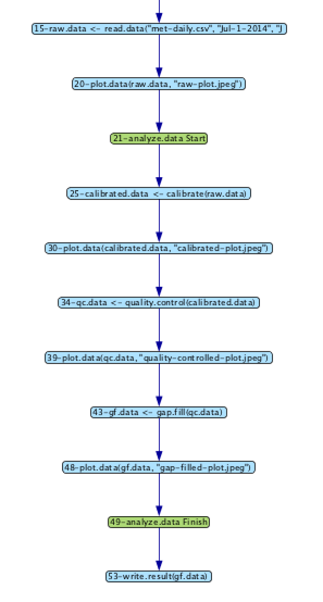
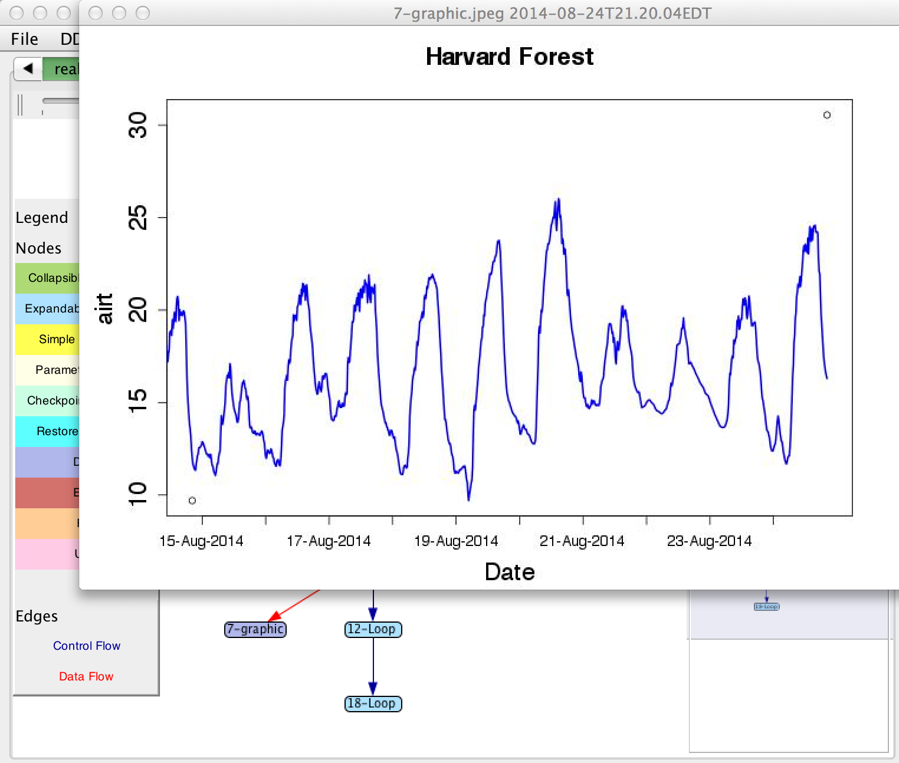

|
Barbara Lerner Elizabeth Fong Mount Holyoke College |
Emery Boose Aaron Ellison Harvard Forest |
Margo Seltzer University of British Columbia |
|
Thomas Pasquier University of Bristol |
Joe Wonsil Carthage College |
Orenna Brand Columbia University |
provViz is a tool that allows the user to view and query
provenance graphs. It has the following functionality:
|
 |
One of the key innovations of provViz is the ability to capture abstraction and allow users to view their graphs at an abstract level or expand abstracted nodes to reveal more detail.
| Most abstract view | Expanding analyze.data | Expanding calibrate and plot.data |
|---|---|---|
|  |  |
|
Connecting to the Data and R ScriptsThe nodes in the graph retain connections to the scientific data, the R scripts and plots produced. By clicking on nodes in the graph, the user can see the values as they existed at that point in the computation. provViz is an R wrapper around DDG Explorer, which requires Java 1.7 or later. |
 |